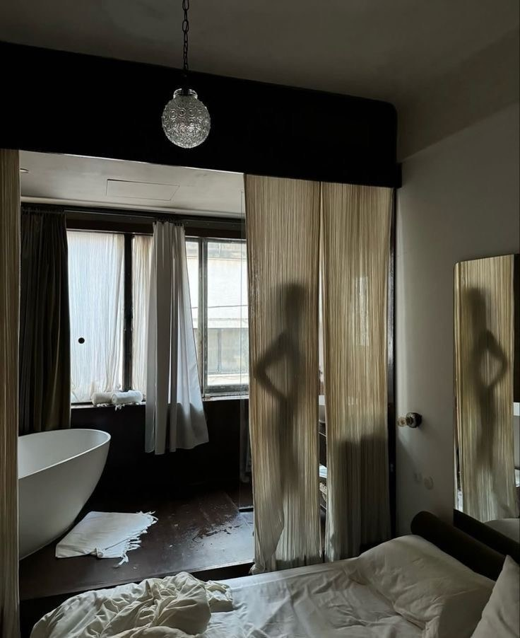
пошаговая схема развития блога
по которой я набрала 90.000 аудитории за полгода

по которой я набрала 90.000 аудитории за полгода
Мой подход в жизни — упрощать всё, что можно. То же самое я сделала с блогом. И после двух лет застоя за полгода я набрала 90.000 аудитории

Telegram и YouTube выросли параллельно, как приятный бонус)
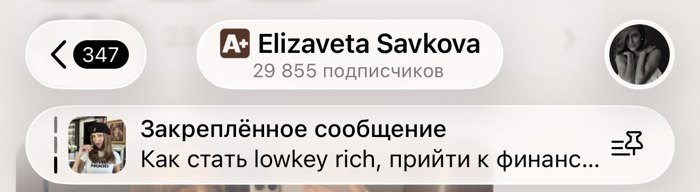
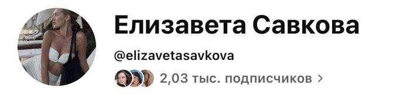
как изменились охваты
было
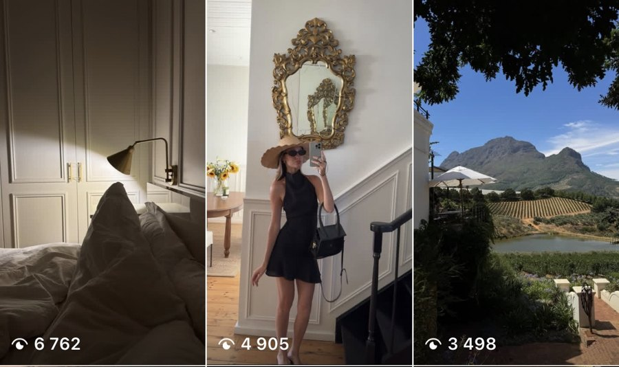
так выглядели мои охваты до: несколько тысяч просмотров на рилс
стало
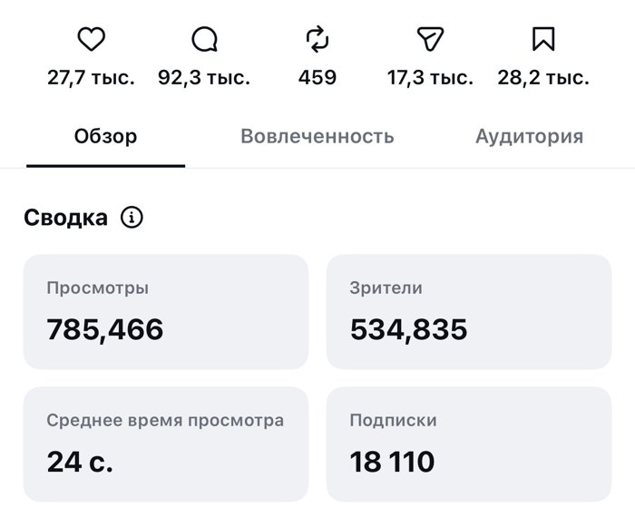
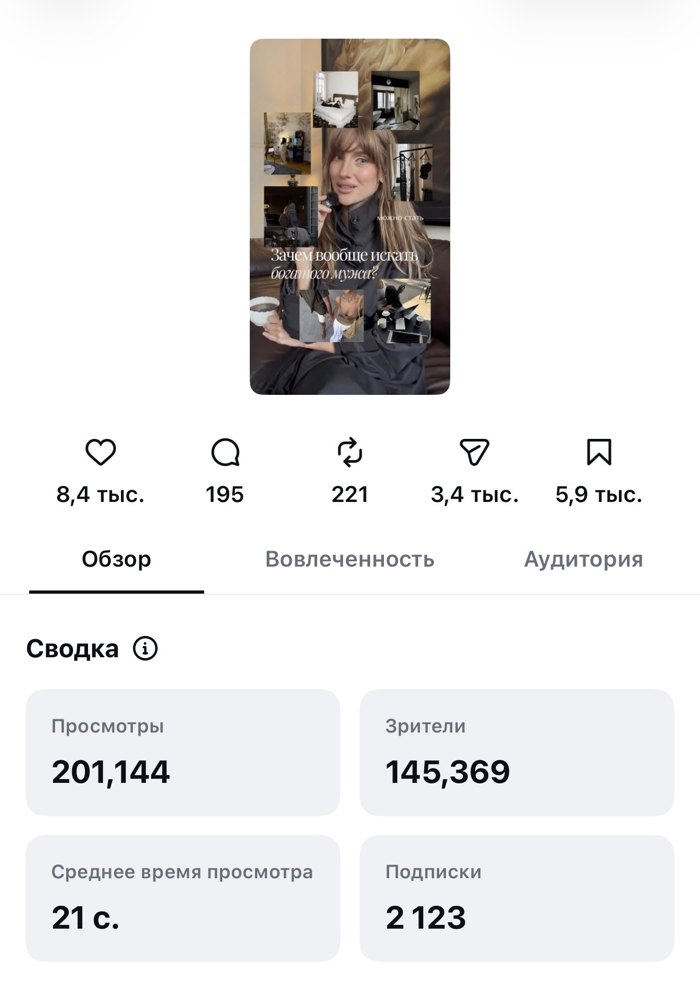
свой подход я называю
когда в основе вашего блога, вашего контента, ваших смыслов стоите ВЫ
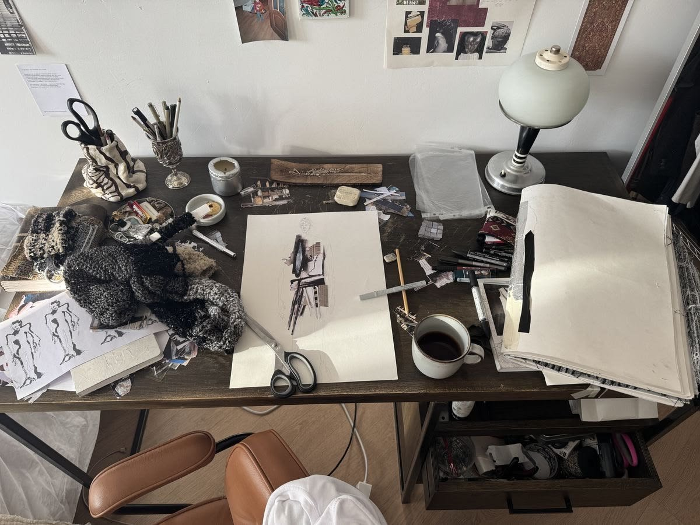
Всё в блоге исходит из «я», из себя. Тогда темы будут сильные, и блог будет расти просто потому, что людям нужны люди. Не очередной контент на тему, которая «работает», а то, в чём очень много вашей энергии
шаг первый
Первый шаг в стратегии блога — понять, какие темы мы в блоге охватываем. Личный бренд не обязательно должен строиться на одной теме. Их может быть несколько, разных. У меня в блоге разные темы
Ваша тема — это то, о чём интересно говорить, о чём хочется говорить, о чём вы можете говорить много: снимать много видео, делать много материалов
откуда брать темы
Например, одна из тем моего блога — финансовая грамотность и финансовая свобода. Я рассказываю про свою цель стать финансово свободной и создать большой капитал. Большого капитала у меня ещё нет, но мне это интересно, я это изучаю, и тема для меня очень объёмная. Она родилась из вопроса: какие у меня цели, что мне сейчас самой интересно
Более того, тема может быть вообще не связана с вашей экспертностью. Моим сильным ограничителем было то, что я думала: нужно снимать и рассказывать про запуски онлайн-проектов, про воронки продаж, потому что это моя экспертность. Но мне не хотелось об этом говорить. И вот эта установка «нужно говорить только о своей экспертности» меня ограничивала
тема должна в первую очередь зажигать вас сейчас, должна быть интересна именно вам
Возможно, вы сразу назовёте свои темы. А возможно, понадобится брейншторм: поразгонять мысли, в диалоге нащупать, на какие темы сейчас интересно говорить, где много мыслей и много энергии
для начала достаточно двух-трёх тем. это темы, с которыми вас по итогу будут ассоциировать
шаг второй
Смыслы — это уже следующий уровень. Они вытекают из тем. Простыми словами, смыслы — это ваши убеждения в рамках темы
На тему финансов можно говорить много всего разного. Но у меня есть свои убеждения:
И эти убеждения я уже расшиваю на смыслы в своём блоге
смыслы — это то, во что вы очень верите. то, за что вы готовы «топить» и готовы поспорить, даже если кто-то с вами не согласен
шаг третий
Дальше задача — заземлить смыслы в сценарий. Какая бы крутая и гениальная ни была мысль, она не будет работать, если не соответствует правилам алгоритмов
У всех рилс, которые залетают, есть структура, даже если кажется, что это просто поток мыслей. Все мои рилс сделаны по этой схеме, и любую свою мысль важно уложить в эту структуру
даже самую скучную, банальную мысль можно сказать цепко, интересно и под другим углом. и даже самую гениальную мысль можно сказать так, что никого она не зацепит
Поэтому нужно учиться формулировать свои мысли сильно. Не бояться высказывать своё мнение, не бояться, что с вами не согласятся. Это и есть индикатор того, что вы по-настоящему пошли в свои убеждения. В убеждениях всегда есть как минимум два мнения, и такие темы работают круче всего
мои заголовки, которые я создала и часто использую, потому что они круто работают
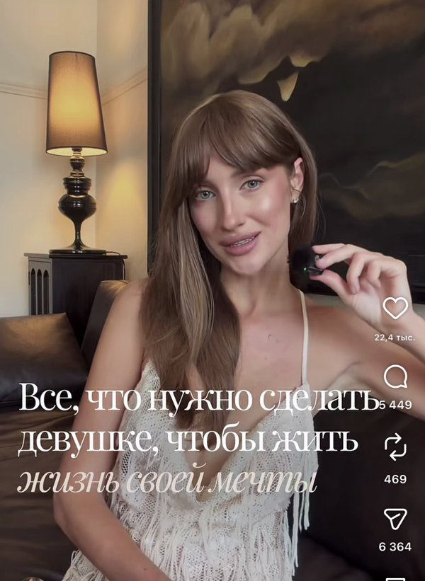
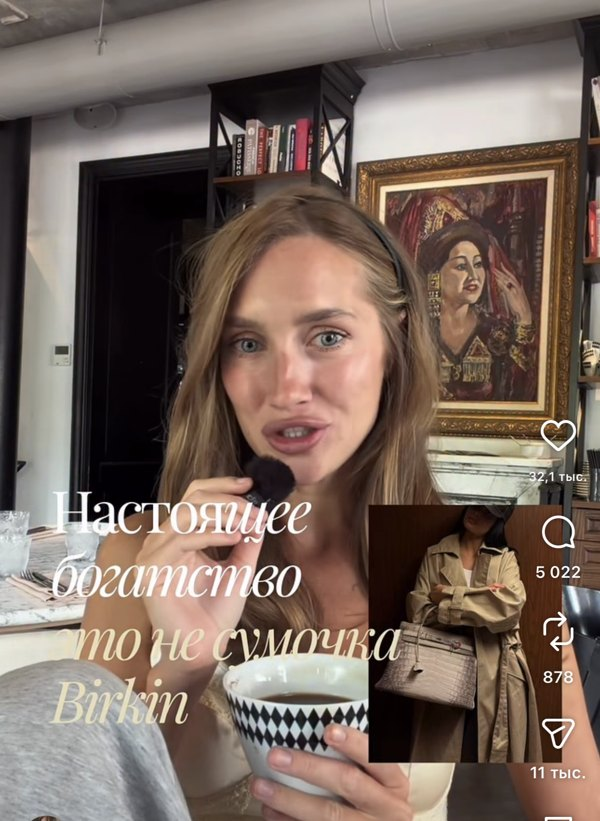
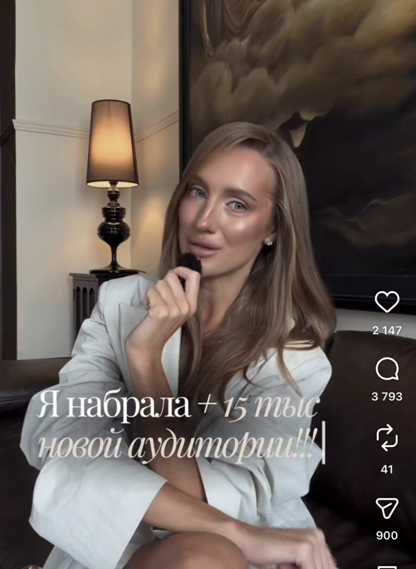
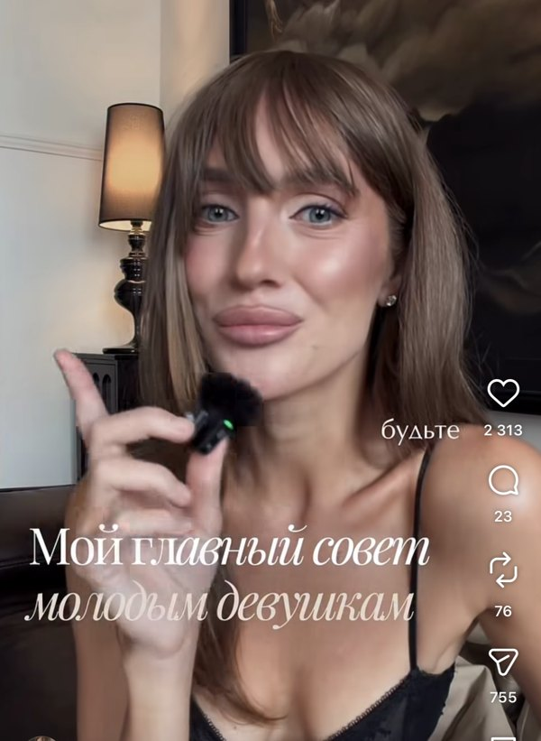
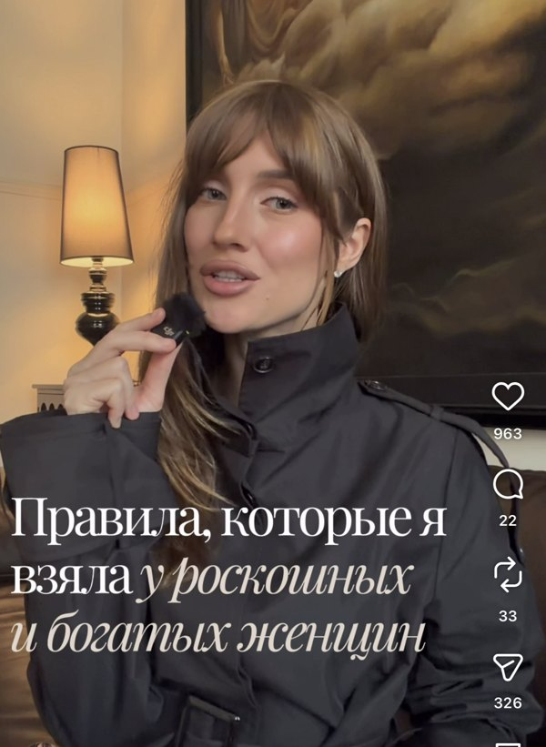
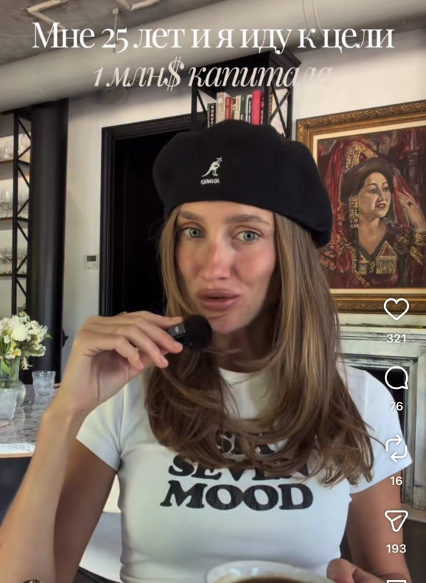
Эти заголовки цепляют благодаря тому, как они сформулированы. Поэтому мои рилс набирают большие просмотры, и их интересно смотреть
главное правило в блоге должна быть энергия
Рилс никогда не будет виральным, если в нём нет энергии. А энергии в нём не будет, если для вас это очень сложный, долгий процесс, как рабочая задача. Информация как таковая никому не нужна. Людям нужна энергия. Ваша, как бы это ни звучало
Подробную структуру сценария, принципы разговорных рилс и то, как я создаю такие заголовки, мы подробно разберём на практикуме)
присоединиться к практикуму · 1 000 ₽шаг четвёртый
Формат, в котором мы снимаем, детали, образ — это тоже наши якоря, с чем нас будут ассоциировать. Они не должны быть высосаны из пальца: они должны очень сильно отражать вас. Так и создаются якоречки. Многие уже узнают мой контент именно по тому, как он выглядит
как я снимаю
Это иллюзия — думать, что каждый раз должна быть какая-то новая, невероятно цепляющая картинка. Практически все мои рилс сняты в одних и тех же местах, в одной и той же позе, в абсолютно одинаковом формате и подаче. Не нужно ничего сочинять и тратить энергию на поиск невероятных локаций
Найдите одно место, где вам нравится, как вы выглядите, где вам комфортно и удобно, то, что вы можете снимать регулярно. В идеале это ваша квартира или какое-то любимое место. Это картинка, которая естественным образом отражает вас: она не нарочито идеальная и не подобрана по примеру кого-то. Это картинка, которая нравится вам самим
Съёмке я уделяю минут десять-пятнадцать в день, между делом: когда забегаю выпить кофе или позавтракать. Не нужно специально выделять время и ставить съёмки в расписание, потому что это создаёт завышенную важность и как будто ограничивает вас в том, чтобы снимать и вести блог легко)
Как найти свои якоря, подробно разбираем на практикуме
присоединиться к практикуму · 1 000 ₽шаг пятый · стратегия
Ни в коем случае не пишите кучу сценариев за раз, чтобы потом записать их пачкой и месяц выкладывать заранее снятые рилс. Мы снимаем в день один, максимум два ролика и выкладываем каждый день
чтобы блог начал расти, важно договориться с собой 30 дней выкладывать
Когда я выкладывала 30 дней подряд без остановки, мой блог резко начал расти и больше не останавливался. Самый мощный рост запустился именно в момент регулярности. Сейчас я стала выкладывать меньше, и блог так не растёт, охваты гораздо меньше. Поэтому я сама возвращаюсь и устраиваю себе 30 дней контента
Смотрим, какой отклик, как сработал рилс, и как нам самим: понравилось или не понравилось говорить на эту тему. В какой-то момент вы увидите, какая тема у вас работает, какой заход, какая подача, какой формат, и дальше будете это масштабировать
тестировать без ожиданий
На каждую из своих тем я просто написала свои мысли и структурировала их в сценарии. И начала, грубо говоря, тестировать, абсолютно сняв любые ожидания. Я просто начала смотреть, какой отклик получают эти темы
масштабировать то, что откликается
Я увидела, что больше всего отклика (охватов, подписок) собирает тема денег, и начала её масштабировать. Если вы зайдёте в мой блог, вы увидите, что ~90% роликов и материалов, которыми я делюсь, про деньги и финансовую свободу. Потому что именно на эту тему я увидела максимальный отклик. То есть я протестировала три гипотезы, три разные темы, и увидела ту, которая сейчас работает лучше всего
Самое ключевое в моей стратегии: за первые три недели я чётко поняла, какие темы у меня работают, о чём мне нравится говорить и что собирает большой отклик. И дальше просто масштабировала. Я не придумываю каждый раз новые темы и новые фишки
Отмечайте каждый день, когда выложили рилс
как растут Telegram и YouTube
Самое главное — это рилс. Мы снимаем рилс, рилс, рилс. Рилс ведут в Telegram, а Telegram дальше ведёт на YouTube. Telegram и YouTube растут побочно, как бонус
Темы везде одни. В формате Reels мы не можем взаимодействовать с человеком больше 60 секунд. А Telegram и YouTube дают возможность на те же смыслы и те же темы сказать больше, ёмче и глубже
Из Instagram в Telegram люди переходят двумя путями: пишут кодовое слово в комментариях, и воронка выдаёт им материал в Telegram-канале, плюс в шапке профиля есть ссылка на канал
вся схема на одном экране
Ваши ответы сохраняются только в этом браузере. Если вы откроете материал на другом телефоне или очистите браузер, поля будут пустыми. Нажмите кнопку, и все ответы скопируются одним текстом. Потом вставьте их в заметки, в «Избранное» в Telegram или куда вам удобно, чтобы они всегда были под рукой
практикум · 30–31 октября
главное — правильно переложить вашу личность в блог. найти свои темы, формат и узнаваемый контент, разобрать принципы разговорных рилс и структуру сценария. этим и займёмся на практикуме)
стоимость участия всего 1 000 ₽
присоединиться к практикуму